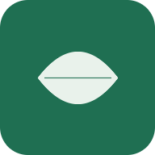

تطبيق مجاني يعمل دون إنترنت لهواتف أندرويد
يُحمَّل دائمًا آخر إصدار. التطبيق مجاني بالكامل، وقواعد البيانات الدولية فيه تتجدد من داخله عند توفر الإنترنت.
إن كان لديك إصدار سابق فسيُحدَّث فوقه دون فقد بياناتك. تأكد أن الملف نزل كاملًا؛ وللتحقق من سلامته قارن بصمته بالمنشورة هنا: قائمة البصمات (SHA-256).
لا يوجد ملف تثبيت لهما. افتح الموقع في المتصفح واختر «إضافة إلى الشاشة الرئيسية» (آيفون) أو «تثبيت التطبيق» (كروم وإيدج على الحاسوب):
Free APK, works offline. Download the latest version (about 41 MB). Open the file, allow installation from this source if Android asks, then tap Install. On iPhone or desktop, open the website and use "Add to Home Screen" / "Install app".